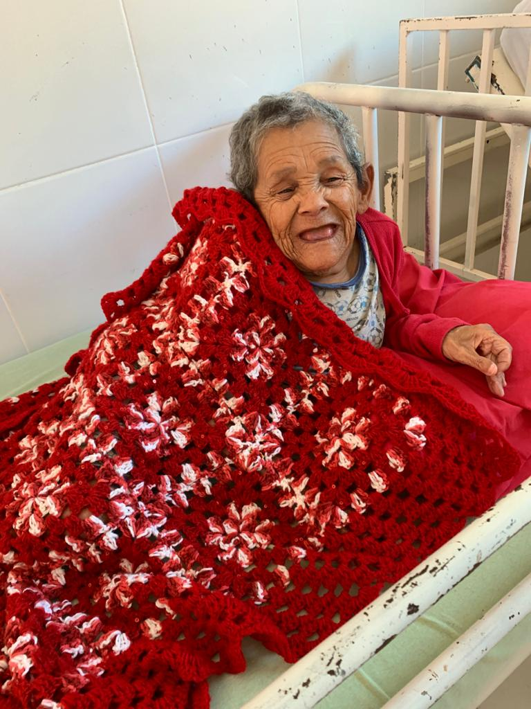
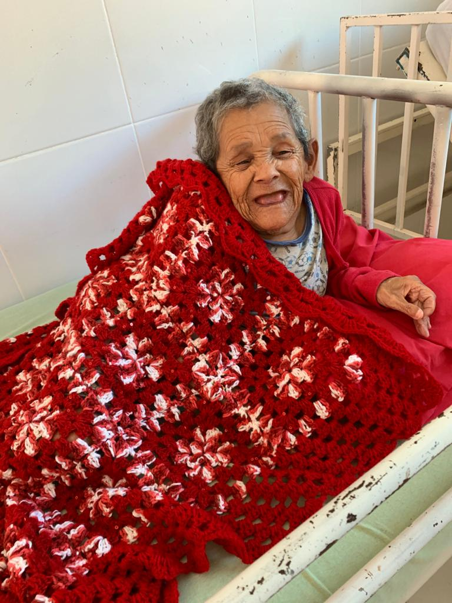
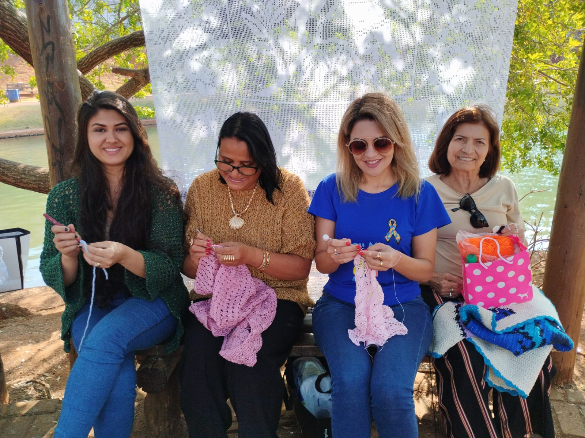
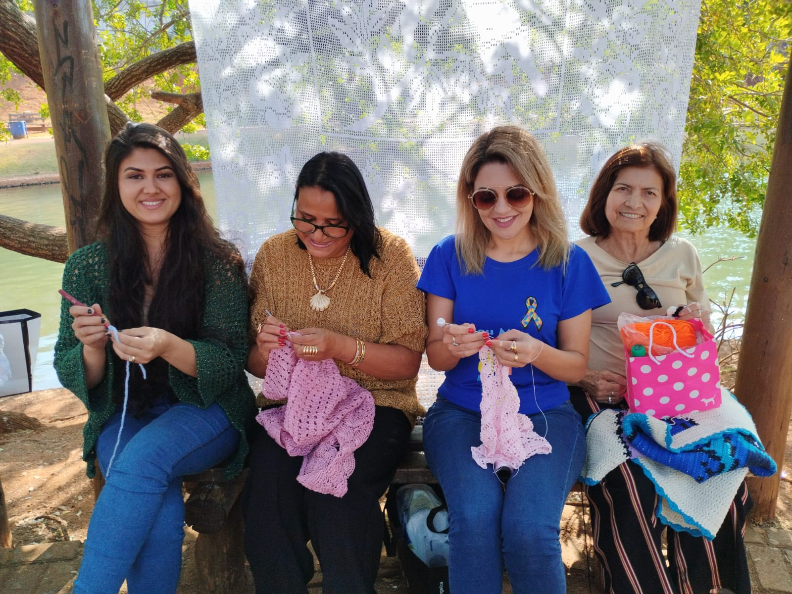

Projeto Voluntário Quadradinhos de Amor Anápolis
Crochê & Voluntariado
Somos um grupo de crochê voluntário que produz mantas e gorros de crochê exclusivamente para doação em Anápolis - GO.
O projeto voluntário Quadradinhos de Amor Anápolis atua desde fevereiro de 2019 de maneira independente estimulando a conservação
e disseminação do crochê como técnica manual artística e cultural.
Fortalecendo as relações interpessoais, nosso projeto funciona também como rede de apoio e terapia
ocupacional para as voluntárias crocheteiras.
Quem recebe as mantas
As mantas que as voluntárias crochetam são todas doadas para internos de abrigos de longa permanência de idosos e pacientes em tratamento oncológico na Santa Casa de Misericórdia de Anápolis. Você pode conferir algumas fotos mais abaixo no site ou no nosso instagram.
Padrão da Manta
Cada centímetro da manta que produzimos foi planejado para:
- ✔ Ser leve e fácil de carregar por pessoas debilitadas
- ✔ Não enroscar na cadeira de rodas
- ✔ Não causar alergias
- ✔ Aquecer na medida certa
- ✔ Levar alegria e energia boa para quem recebe
Se você sabe fazer crochê, pode acessar a receita no link: Receita da Manta
Várias formas de participar
As mantas que produzimos têm um custo material e aceitamos doações de 3 formas:
- ➊ Doação de qualquer valor pelo PIX: quadradinhosdeamor.go@gmail.com
- ➋ Doação cobrada mensalmente no cartão de crédito pelo Apoia.se: Apoia.se
- ➌ Doação de novelos de lã acrílica (espessura TEX 375-500): se você tiver muitos "restinhos" de lã em casa pode enviar pra nós pelos Correios ou caso você more em Anápolis podemos combinar de buscar.
Cada manta padrão utiliza aproximadamente 700g de lã acrílica com espessura TEX 375-500, e custa entre R$80 e R$90 (valores de Outubro de 2024 na cidade de Anápolis)
VEJA MAIS
 

 
